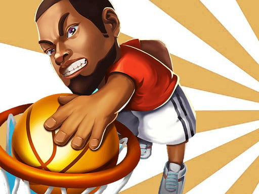
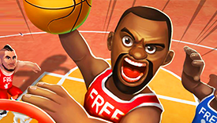
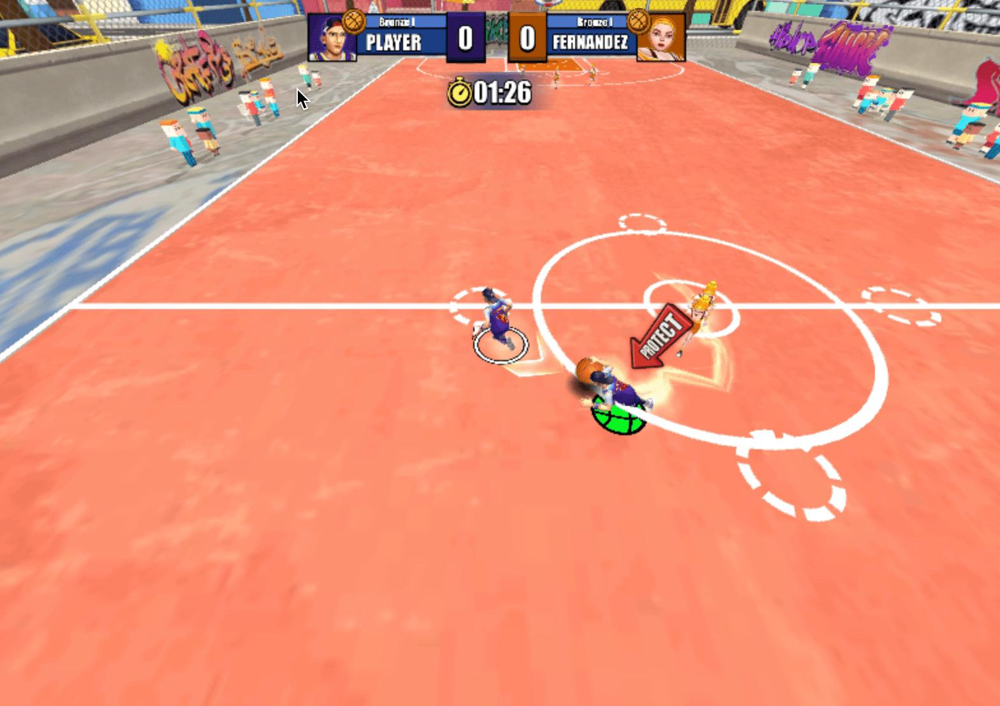

Introduction
Basketball.io is a free, browser‑based multiplayer basketball arena where you jump into quick 3‑on‑3 matches, pick a custom character and ball, and battle players worldwide. Its .io style keeps games short, the action intense, and the ranking system transparent. Unlike traditional sports games, you can instantly join a court, start a match, and see your global rank after each round. The simple mouse/keyboard controls make it easy to dribble, pass, and slam‑dunk while the mobile‑friendly touch interface keeps you competitive on the go. Players love the blend of arcade fun, skill‑based competition, and the endless quest to climb the leaderboard. Every match feels fresh thanks to varied court layouts and dynamic AI teammates.
Getting Started

Getting started with Basketball.io is straightforward. Open https://basketball-io.co in your browser, click the “Play” button, and you’ll be taken to the lobby. Choose your player model, pick a basketball design that fits your style, and select a court from the list of available arenas. Once you hit “Join,” the game drops you into a live 3‑on‑3 match. Controls are designed for both desktop and mobile. On a PC, use the arrow keys or WASD to move your character; press the Spacebar or left‑click to pick up the ball, shoot, or perform a dunk. With the mouse you can click‑and‑drag to dribble, pass, and aim your shot, giving you precise control over trajectory. On mobile, simply tap and drag on the screen to move and handle the ball. During a match, approach an opponent holding the ball and press the “Steal” button (E on keyboard, or the steal icon on mobile) when you’re close enough to intercept. Position yourself between a teammate and the defender to act as a shield, and always keep an eye on the basket for a quick dunk when you receive a pass. After each round, the game displays your new global rank, encouraging you to refine your strategy and climb higher.
Basic Tips
Master movement – Use WASD or arrow keys to stay ahead of defenders. Example: when the ball is on the opposite side, sprint to the open lane to receive a pass and drive toward the basket. Learn steal timing – Get close to a dribbling opponent and press the Steal button (E) just as they pass. A good moment is when they lob the ball toward a teammate near the rim; intercept by moving forward and hitting steal right when the pass is released. Position for rebounds – After a missed shot, sprint under the hoop. If a teammate’s layup bounces off the rim, move directly under the basket to tip the ball in for an easy score. Use shielding – When holding the ball, place your character between the ball and the nearest defender. If a defender is chasing from behind, turn to block the steal attempt with your body. Practice the dunk – Get inside the three‑point line, hold the Shoot button until the dunk meter fills, then release. For a two‑handed slam, position yourself on the left lane, press shoot when two steps from the hoop, and watch the ball slam through the net.
Advanced Strategies

Team coordination – Use quick chat or in‑game pings to call for a pass, designate a shooter, and set up a pick‑and‑roll. Example: If you have the ball on the left wing, ping the teammate near the basket to move to the free‑throw line for a pick, then pass. Court control – Dominate the center of the court, forcing opponents to the edges. By holding the middle, you limit passing lanes and can quickly transition from defense to offense. This also reduces turnovers overall. Counter‑stealing – Watch opponent's steal pattern; if they always press E when you’re dribbling, fake a pass by moving your aim indicator, then dribble past them while they commit to the steal. Stamina management – Avoid sprinting constantly; sprint only when necessary, such as reaching a loose ball or closing distance for a dunk. Conserving stamina lets you defend and attack effectively in the final minutes.
Pro Tips

Optimize ball handling – Use flick gestures on mouse to perform spin moves; combine them with direction changes to confuse defenders. Additionally, timing your spin move with a sudden speed boost can break tight marking. Predict opponent moves – Track opponent's previous actions, such as steal attempts and passing patterns, and anticipate their next move, allowing you to intercept or block. Exploit arena geometry – Use the backboard and rim to bank shots from difficult angles; practice off‑glass passes for unexpected assists. Leverage ranking – Focus on winning consecutive matches rather than high scores; the ranking system rewards streaks, boosting you faster than individual performances.
Conclusion
Basketball.io delivers fast, competitive basketball action that’s easy to pick up but hard to master. With simple controls, varied courts, and a global ranking system, every match offers a fresh challenge and a chance to climb the leaderboard. Whether you’re stealing balls, setting up picks, or slamming dunks, the game rewards skill, teamwork, and quick thinking. Jump into the arena today, refine your tactics, and see how high you can rise!